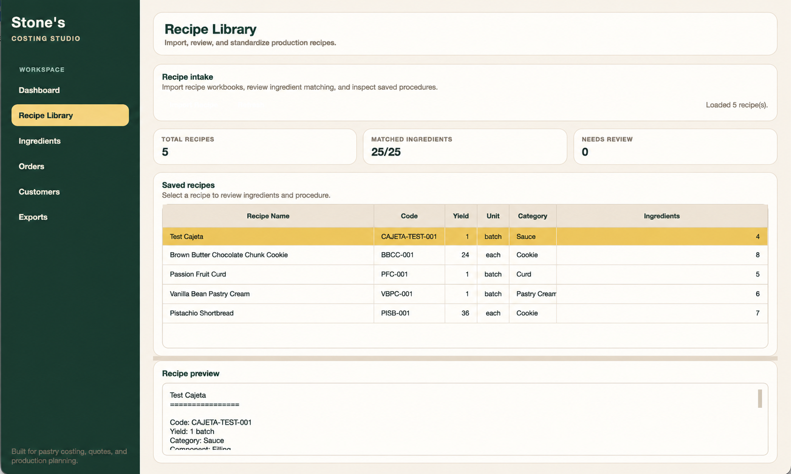
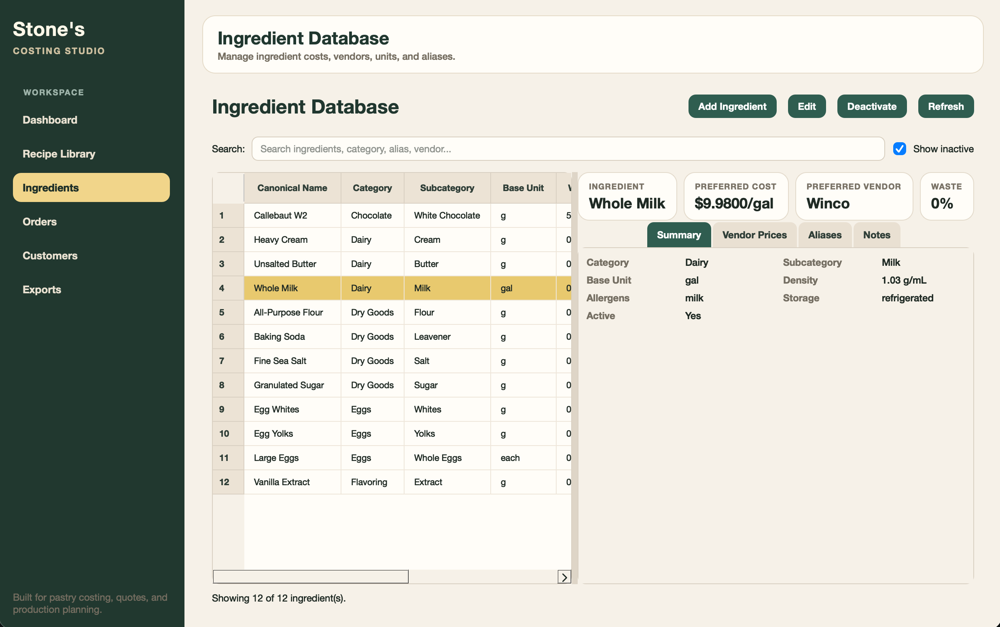
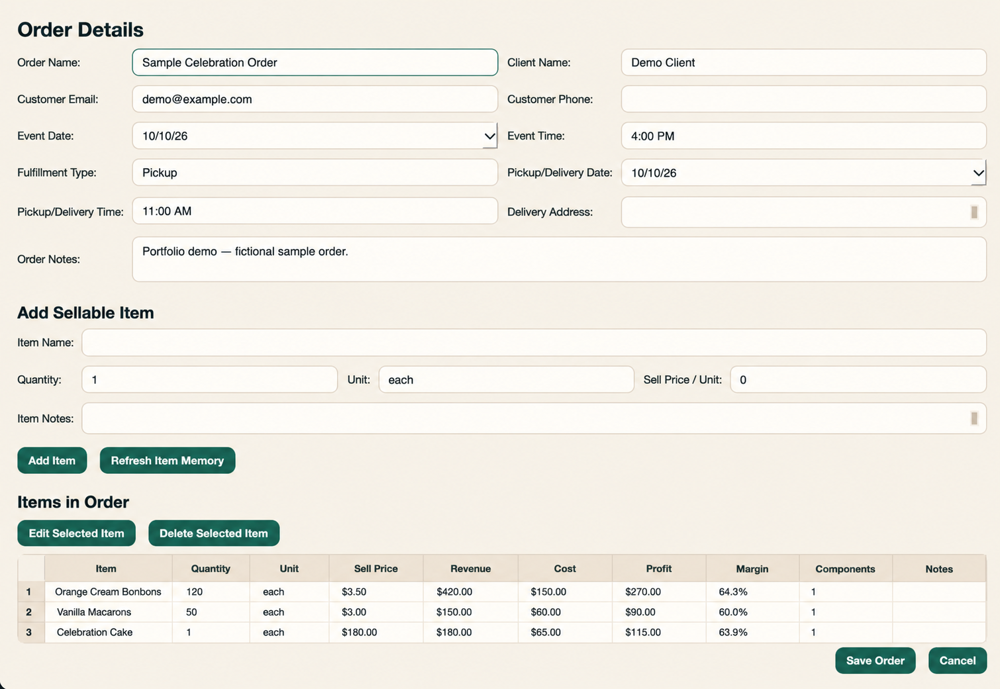

Python · Desktop software · Pastry operations
Stone's Costing Studio.
I built a desktop application to bring recipes, ingredients, vendor costs, and customer orders into one workflow for a pastry business.
01 / The problem
Pricing starts before an order arrives.
A product's cost depends on how a recipe's ingredients match the items a business actually buys, their pack sizes, and the quantities used. I designed the application to connect that information to an order and its selling price.
The workflow moves from recipe intake to standardized ingredients, vendor purchase records, and item-level order costing.
02 / Recipes
Bring production recipes into one library.
The recipe library supports importing, reviewing, and matching recipe ingredients to the ingredient database.

03 / Ingredients
Keep names and units consistent.
The ingredient database organizes canonical names, categories, units, aliases, and vendor purchase options so recipes can be connected to purchasing records.

04 / Orders
Turn costing into a quote.
Orders combine items, quantities, selling prices, calculated costs, margins, and fulfillment details in one view.

05 / Implementation
Built as a desktop application.
I developed the app in Python, using PySide6 for its interface and SQLAlchemy with SQLite for stored data. Spreadsheet tools support recipe and data workflows.
The project made me design the interface and the relationships between recipes, ingredients, vendors, customers, and orders together.